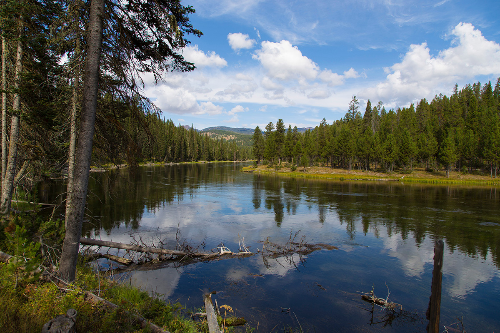

Preston Idaho

Weather Summary
Currently: 65°F
High: 77°F
Low: 45°F
Precipitation: 2%
Humidity: 41%
Wind: 2 mph
>Daily Forcast
- Wed
- Thur
- Fri
- Sat
- Sun
 68°F
68°F 64°F
64°F 72°F
72°F 75°F
75°F- 78°F
Activity
Big Springs Water Trail
Big Springs is the headwaters of Henry's Fork and is one of the largest springs in the country. Henry's Fork is considered one of the best fly-fishing streams in the nation. Fishermen cast for rainbow and brook trout. Tubing, canoeing, kayaking and rafting are also popular on the river.
The Big Springs National Recreation Water Trail can be accessed from the campground and ends 4.5 miles away at Macks Inn. It offers a lazy three-hour float or canoe trip through beautiful scenery. Wildlife, including moose, bald eagles and Sandhill cranes, are often seen along the trail.
The charming and historic John Sack Cabin is nearby, noted for its unique location, construction and furnishings.
Hiking, biking, horseback riding and ATVing are popular activities. Many miles of trails crisscross Island Park, including the Continental Divide National Scenic Trail and the Nez Perce Trail are in the area.
Credit to National Recreation Trail database. You can find more information and directions in the link bellow: National Recreation Trail